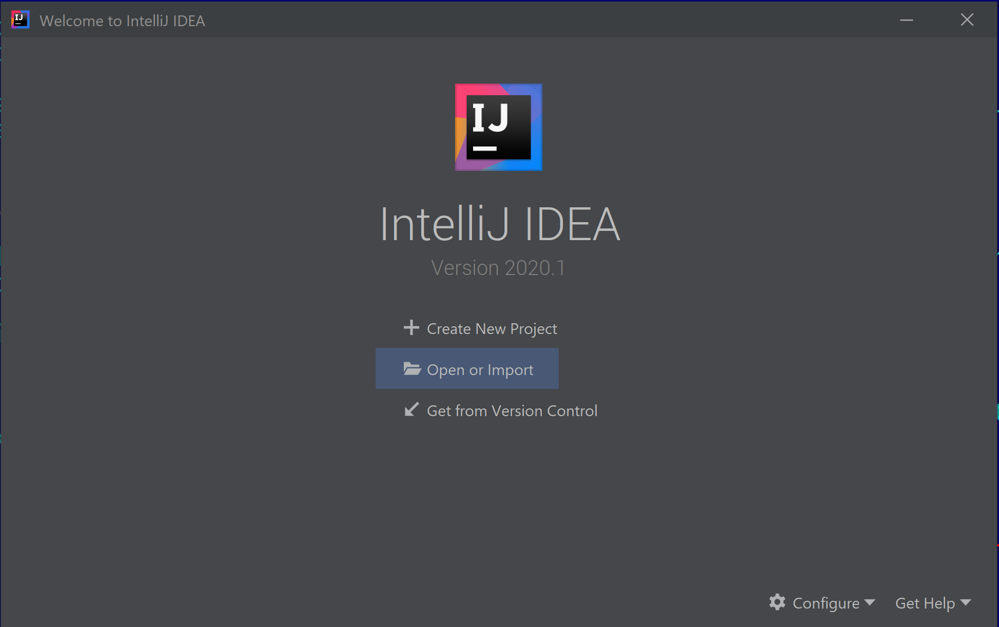
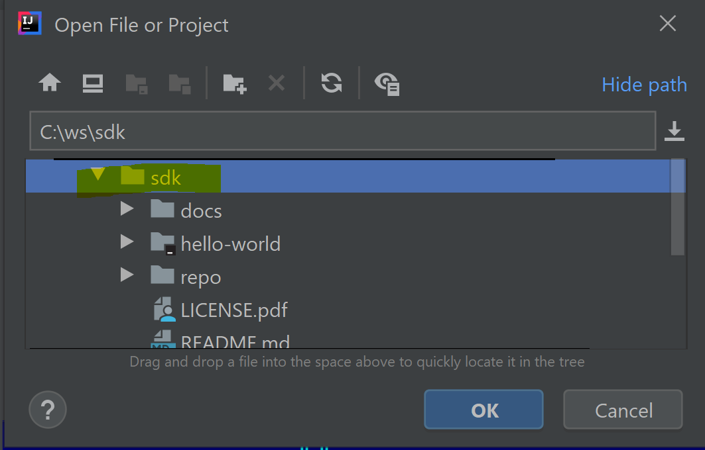
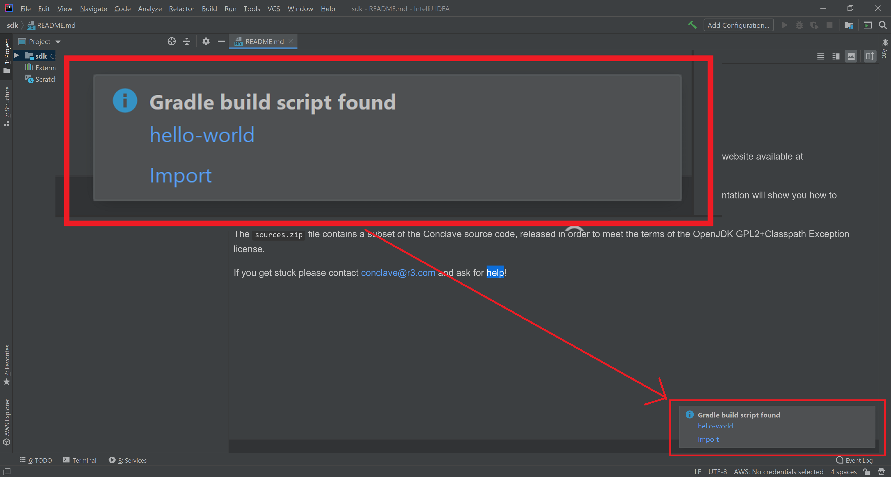
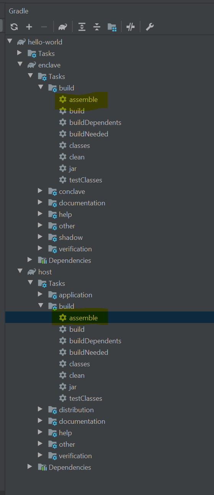
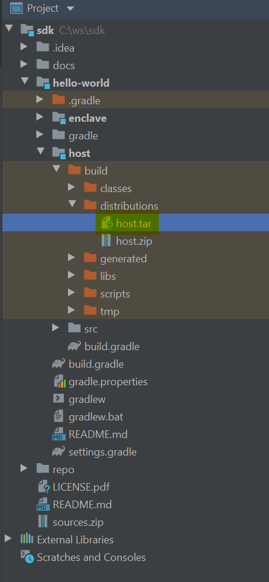
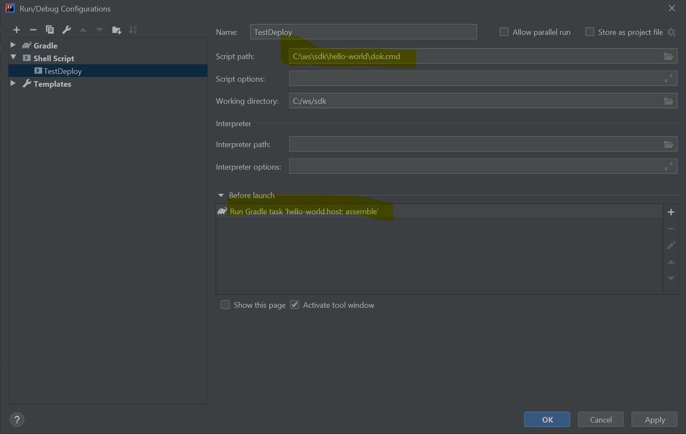

First enclave¶
Important
- You need the Conclave SDK. If you don't have it please contact R3 and request a trial.
- This tutorial assumes you've read and understood the conceptual overview.
You can find a sample app in the hello-world directory of your SDK. You can use this app as a template
for your own if you want a quick start. We will cover:
- How to set up your machine.
- How to compile and run the sample app.
- How to write the sample app.
Setting up your machine¶
You need Java 8 or 11 (your choice) and Gradle, so make sure you've installed those first. Alternatively use an IDE like IntelliJ IDEA, which can download and set up both Gradle and the Java Development Kit (JDK) for you.
Currently, we support developing enclaves on Windows, macOS and Linux. However, there are a few platform specific differences to be aware of.
Firstly, if you plan on building enclaves using the graalvm_native_image runtime
(which is the default) on Windows and macOS you will need to install Docker. The graalvm_native_image build
process requires access to a Linux build environment which Conclave can automatically configure during the build
for you if Docker is installed. If you do not have Docker installed then you can still build enclaves targeting
the avian runtime on Windows and macOS.
Secondly, executing enclaves without using the "mock mode" requires Linux or a Linux container (e.g. via Docker or Windows Subsystem for Linux) and there are no plans to change this. Apple doesn't support SGX and the Windows API support is too limited for use at this time. Instructions are provided below to show you how to use Docker on Windows and macOS to run your enclaves in "simulation mode". Alternatively, for day to day development the mock API is plenty sufficient and allows you to debug into enclave calls as well. Compiling a real enclave is only needed for integration testing or real deployment.
Enclaves can run in simulation mode without requiring any special setup of Linux or SGX capable hardware. However you of course get no hardware protections. To run against real SGX hardware you must perform some additional machine setup.
Compiling the sample enclave¶
Step 1: Import the project

Step 2: Look at the Conclave SDK's top level directory

Step 3: Click "import" when notified that there's a Gradle build script

Step 4: If on Linux or Windows, double-click on :host:assemble. Voila!  You have just built your first enclave.
You have just built your first enclave.

Now explore the build folder.

As normal with Gradle, the assemble task has bundled the program into a zip, with startup scripts. These scripts are
nothing special - they just set up the classpath. You could also e.g. make a fat JAR if you want.
Running the host and client¶
You will need Linux to test your enclave. Just run the host app like any app - no special startup scripts or setup is required with Conclave!
1 2 3 | |
If your Linux machine doesn't have SGX, you should see something like this:
1 2 3 4 5 6 7 8 9 10 11 12 13 14 15 16 | |
The host has loaded the enclave, obtained its remote attestation (the EnclaveInstanceInfo object), printed it out,
asked the enclave to reverse a string and finally opened up a TCP port which will now listen for requests from remote
clients.
So, let's run the client app:
1 | |
The client will connect to the host, download the EnclaveInstanceInfo, check it, and then send an encrypted string
to reverse. The host will deliver this encrypted string to the enclave, and the enclave will send back to the client
the encrypted reversed response:
1 2 3 4 | |
Try this:
1 | |
Tip
Aibohphobia is the fear of palindromes.
Testing on Windows and macOS¶
The easiest way to test your code is always to use the mock environment. This runs everything inside the host JVM and thus gives high performance, cross platform portability and full debugging support, as all the SGX infrastructure is kept out of the way. However, it means you aren't testing on the same JVM that will be used in the enclave. To create and run a real enclave on Windows or macOS you will need to run the host on a Linux virtual machine with a simulation mode enclave. The easiest way to do this is to use Docker, which is integrated with Conclave and hides the virtual machine setup from you.
Install Docker and then follow these instructions.
Tip
If you are using the avian runtime then you may need to run this command in the root of your Gradle project
first: gradlew setupLinuxExecEnvironment. You don't need to do this if you use the graalvm_native_image
runtime.
The following command creates a temporary Docker container that mounts the current directory then runs the host within the container. The container is automatically stopped and removed after the host exits. The host may use port 8080 for networking.
Note that this command should be run from the root of your Gradle project, assuming your host program is in a module
called host - adjust the paths if not.
Windows PowerShell
1 | |
macOS Terminal
1 | |
You may want to create an IntelliJ launch configuration to automatically rebuild the host and enclave (if needed) before running the host in the container.
Put the command above in a .cmd batch file (Windows) or a .sh file (macOS) and then use the "Shell script" launch
configuration type, and add a Gradle task in the "Before launch" section. You should make it depend on the host's
installDist target. You will then be able to click the run icon in your IDE to build and start up the Java host app
inside the Docker container.

If on macOS and on a version of IntelliJ before 2020.3 you can set the default interpreter to exec - this will make
IntelliJ complain when you try to save or run it, but if you bypass those warnings it will cause the terminal tab to
close when the host exits, which keeps your terminal area clean. Versions of IntelliJ after 2020.3 don't need this as
they provide a check box to control whether the host will be in a Run tab or a terminal tab.
If you get stuck please contact conclave-discuss@groups.io and ask for help!